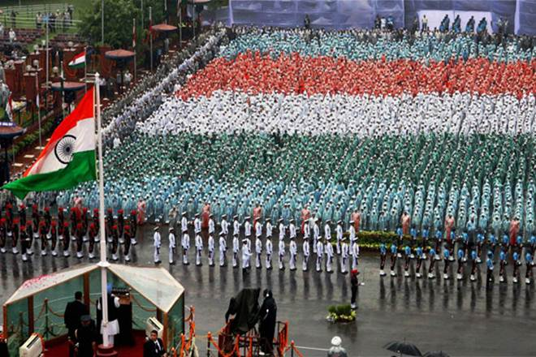
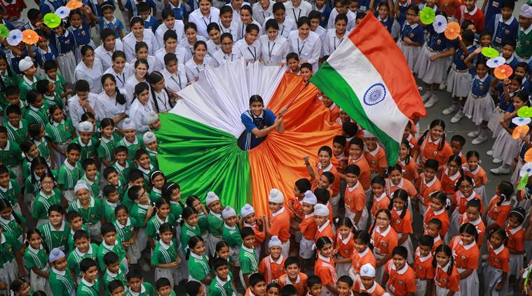
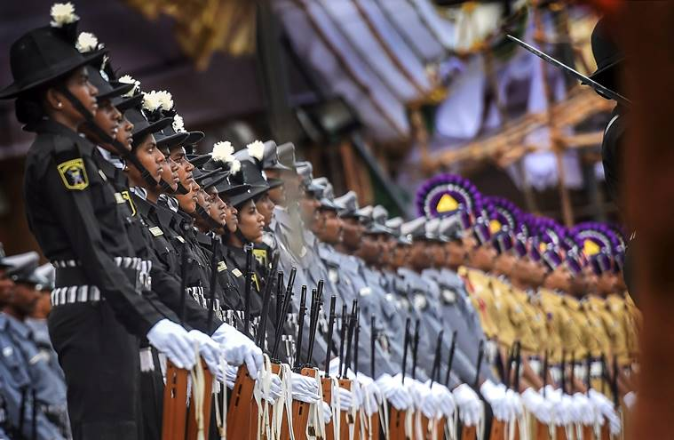
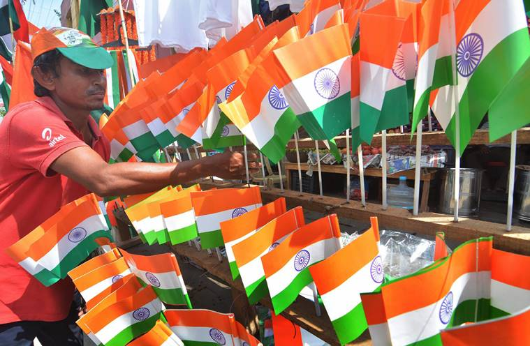

Happy 72th Independence day

72nd Independence Day: As India proudly celebrates its 72nd Independence day on August 15, countrymen in the country and rest of the world would cherish the idea of oneness and remember the sacrifices that freedom fighters made during their struggle against the mighty British empire. India got Independence after separation of India into two nations. Now the past is history and what remains is the glory of India’s struggle. August 15 is the day when India celebrates the day of its sovereignty from Britishers, but why was this particular date chosen as the day for this historical event? Here are the events that suggest the relevance of this day+. The British Parliament passed the Indian Independence Act on July 5, 1947. It provided for two dominions states: India and Pakistan. King of Britain was retained as the head of the state until full transition to Republic state. The partition was painful and it created a rift on the lines of religion. Riots and mass casualties were the most unfortunate outcomes of the two-nation principle. However, the two nations were a reality. It was in 1929 when Jawaharlal Nehru gave a call for ‘Poorna Swaraj’, meaning complete independence from colonial rule. January 26 was chosen as the Independence Day and the Congress party even celebrated it from 1930 onwards till India’s independence.

However, August 15 became the Independence Day, the reason was the last Viceroy of India, Mountbatten. He was given the powers and mandate by the British parliament to transfer the power to Indians by June 30, 1948. However, August 15, 1947 was declared by the Britishers the day of end of British rule. To this end, Mountbatten had said that he was ensuring that there will be no bloodshed or riot. However, what happened in August 1947 is a recorded history, which proved Mountbatten wrong. The Indian Independence Act which was passed by the British parliament was based upon the Mountbatten plan of June 3, 1947. The Act clearly mentioned the date of independence, August 15, 1947.



Back